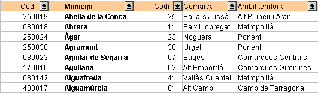

UF4. Fulls de càlcul
G rapida - filtreaut
Filtre automàtic
La funció Filtre automàtic insereix en una o més columnes d'una àrea de dades un quadre combinat que permet seleccionar els registres (files) que s'han de mostrar.
Activar el filtre automàtic
- Seleccioneu les columnes en les quals desitgeu utilitzar el filtre automàtic
- Demaneu l'opció de menú Dades | Filtre | Filtre automàtic

Els senyals en forma de fletxa que apareixen en el nom de cada camp, permeten realitzar el filtrat. - Per executar el filtre, premeu en la fletxa desplegable de la capçalera de la columna i escolliu un element.
En fer-ho, només es mostraran les files que el seu contingut compleix els criteris del filtre. Les altres files queden amagades la qual cosa es pot comprovar per la discontinuïtat que mostraran els números de les files. La columna que s'ha fet servir per al filtrat s'identifica mitjançant un color diferent (blau) del botó de fletxa.
Opcions de filtrat
- Per tornar a mostrar tots els registres, seleccioneu l'entrada -Tot- del quadre combinat de filtre automàtic
- Si escolliu l'opció -Estàndard- es mostrarà el quadre de diàleg Filtre estàndard que permet executar aquesta modalitat de filtre (vegeu Filtre estàndard)
- L'opció -Top 10- mostrarà, únicament, els 10 valors més alts
- En escollir qualsevol altre valor dels mostrats al quadre combinat, es mostraran només les files de l'àrea de dades que, el valor de la columna on s'ha establert el filtre, coincideixi amb l'escollit.
- El resultat d'un filtrat es pot tornar a filtrar segons les dades d'una altra columna, de forma que s'acumulin més d'un criteris de filtrat.
Desfer el filtrat
- L'opció de menú Dades | Filtre | Suprimeix el filtre torna a mostrar totes les files de l'àrea de dades (que queda seleccionada), suprimint d'aquesta forma els filtrats establerts. No desapareixen les fletxes de quadre combinat de les capçaleres de les columnes podent-se, d'aquesta forma, realitzar nous filtrats.
- L'opció de menú Dades | Filtre | Oculta el filtre automàtic fa desaparèixer el quadre combinat de les capçaleres de columna però no elimina el filtrat que s'hagi pogut realitzar
- L'opció de menú Dades | Filtre | Filtre automàtic restableix les files de l'àrea de dades original i fa desaparèixer les fletxes de quadre combinat de les capçaleres de les columnes.